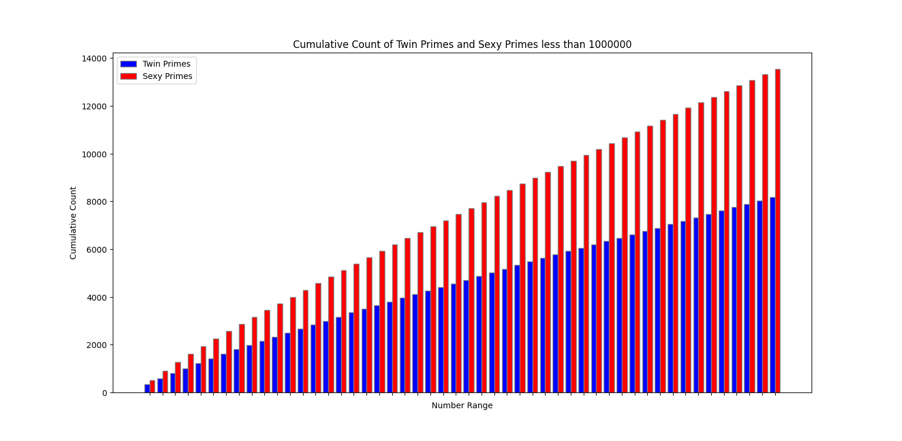

This page is dedicated to fun, interesting, or just random math stuff
Twin and Sexy primes are pairs of primes that differ by 2 and 6 respectively. I figured it would be fun to see which is more commonly found.

As we can see from the graph sexy primes are more common than twin primes. To see how much more common they were I made a C++ program to count them both. It found that there are 440,312 twin primes and 879,908 sexy primes below 100,000,000. Which makes sexy primes about twice as common as twin primes.